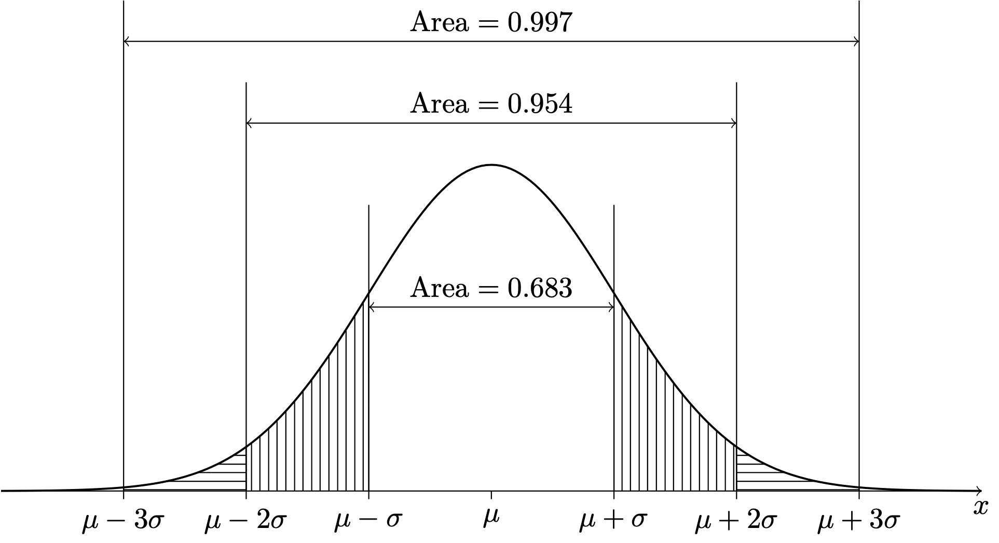
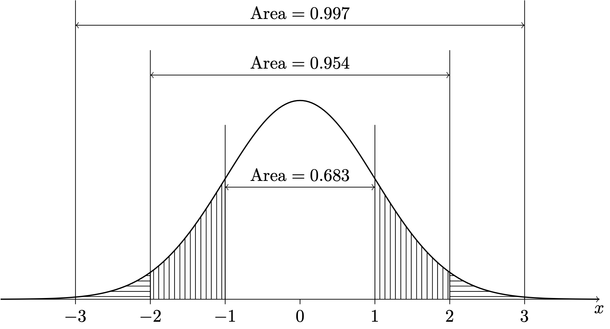
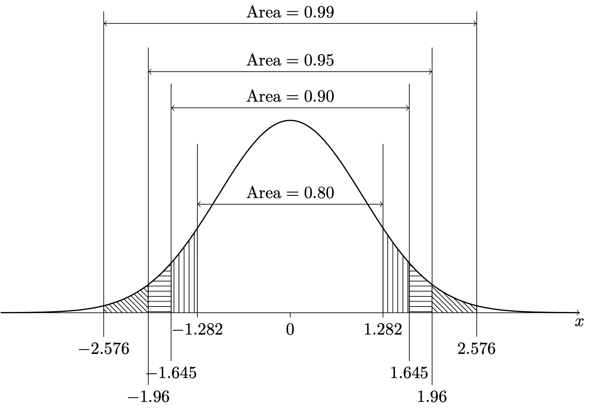

Here we introduce the most famous of all probability distributions for a continuous random variable: The normal distribution, also known as the Gaussian distribution for having been introduced by Carl Friedrich Gauß (1777–1855). This distribution is recognized by its bell-shaped probability density function (PDF).
13.1 Probability density function
Definition 13.1 (Normal distribution probability density function) The normal distribution with location parameter \(\mu \in \mathbb{R}\) and scale parameter \(\sigma > 0\) has probability density function \[
f(x;\mu,\sigma) = \frac{1}{\sqrt{2\pi} \sigma} \exp\Big[-\frac{1}{2}\Big(\frac{x - \mu}{\sigma}\Big)^2\Big]
\] for all \(x \in \mathbb{R}\).
Since the PDF \(f\) is function of \(x\) which depends upon the values of \(\mu\) and \(\sigma\), the above uses the convention of putting \(\mu\) and \(\sigma\) after a semicolon: \(f(x;\mu,\sigma)\).
We will write \(X \sim \mathcal{N}(\mu,\sigma^2)\) to say that \(X\) has the normal distribution with location parameter \(\mu\) and scale parameter \(\sigma\). Figure 13.1 shows the bell-shaped curve of the normal distribution PDF. From the plot we see that the PDF is centered at \(\mu\) and that as we move away from \(\mu\) by multiples of \(\sigma\) we capture more and more of the probability under the curve.
Code
import numpy as npimport matplotlib.pyplot as pltimport scipy.stats as statsplt.rcParams['figure.dpi'] =128plt.rcParams['savefig.dpi'] =128plt.rcParams['figure.figsize'] = (5, 3)plt.rcParams['text.usetex'] =Falsefig, ax = plt.subplots()x = np.linspace(-3.5,3.5,201)fx = stats.norm.pdf(x,0,1)ax.plot(x,fx)ticks = [r'$\mu - 3 \sigma$',r'$\mu - 2 \sigma$',r'$\mu - \sigma$',r'$\mu$',r'$\mu +\sigma$',r'$\mu + 2\sigma$',r'$\mu + 3 \sigma$']ax.set_xticks([i for i inrange(-3,4)])ax.set_xticklabels(ticks)ax.set_yticks([])
Figure 13.1: Probability density function of the \(\mathcal{N}(\mu,\sigma^2)\) distribution.
We next consider the mean and variance of the normal distribution.
13.2 Mean and variance
We find that the parameters \(\mu\) and \(\sigma\) give the expected value and standard deviation of the distribution.
Proposition 13.1 (Mean and variance of the normal distribution) If \(X \sim \mathcal{N}(\mu,\sigma^2)\) then \(\mathbb{E}X = \mu\) and \(\operatorname{Var}X = \sigma^2\).
From now on, when we have \(X \sim \mathcal{N}(\mu,\sigma^2)\), we will refer to \(\mu\) as the mean and to \(\sigma\) as the standard deviation. Figure 13.2 shows the PDFs of normal distributions for several combinations of \(\mu\) and \(\sigma\). We see that \(\mu\) positions the center of the PDF along the horizontal axis and \(\sigma\) governs the spread of the PDF.
Figure 13.2: Probability density functions of several normal distributions.
When we use the Normal distribution, we often think in terms of the number of standard deviations from the mean. It turns out that if \(X\) has a normal distribution, then it will lie within \(1\) standard deviation of its mean \(68\%\) of the time; it will lie within \(2\) standard deviations of its mean about \(95\%\) of the time; and it will lie within \(3\) standard deviations of its mean about \(99.7\%\) of the time. This is depicted below.

Figure 13.3: PDF of the \(\mathcal{N}(\mu,\sigma^2)\) distribution.
We sometimes assume that the values in a population are Normally distributed in the sense that if we were to take a census of the population—that is if we were to observe every single value—and build a histogram of all the values, the histogram would take on the shape of the normal PDF. When this is true of a population, we may regard each sampled value \(X\) from the population as a random variable having a normal probability distribution. We can then use the normal PDF to compute probabilities concerning \(X\).
Exercise 13.1 (Loblolly pines) Suppose the growth in height of Loblolly pines from age three to age five is Normally distributed with a mean of \(6\) feet and a standard deviation of \(0.5\) feet. Let \(X\) be the growth from age three to age five of a randomly selected Loblolly pine.
What is the probability that the growth in height of the tree from age three to five is in between \(5.5\) and \(6.5\) feet?1
What is the proportion of Loblolly pines that grow more than \(7\) feet in height from age three to age five? 2
Sometimes the “population” is not so easy to define, as in the next example about miles-per-gallon on each tank of gas. In this case, the population is rather a hypothetical one: if we were to fill the tank many many times and record the gas mileage many many times, than we might assume that these gas mileages would produce a histogram conforming in shape to the Normal probability density function.
Exercise 13.2 (Miles per gallon) Suppose your mpg follows a Normal distribution with mean \(28\) and standard deviation \(2\). What is an interval within which your mpg should lie about \(95\%\) of the time? 3
In these simple exercises, the desired probabilities can be obtained from the areas under the curve given in Figure 13.3 We next consider how to compute probabilities for normally distributed random variables more generally.
13.3 The standard normal distribution
By Definition 12.1, we see that if \(X \sim \mathcal{N}(\mu,\sigma^2)\), we have \[
P(a \leq X \leq b) = \int_a^b \frac{1}{\sqrt{2\pi} \sigma} \exp\Big[-\frac{1}{2}\Big(\frac{x - \mu}{\sigma}\Big)^2\Big] dx
\] for any \(a < b\). Now, no amount of calculus knowledge will allow you to evaluated this integral by hand exactly. We find that the value must be approximated, and the calculations for doing so are tedious. Fancy calculators and software like R or Python can compute (that is they can calculate very close approximations to) these integrals, but people have been using the normal distribution since before these tools were available. How did they compute areas under the normal PDF?
In early days, the idea was to consider a standard normal random variable having mean \(0\) and standard deviation \(1\) and to publish a table containing many already-computed highly accurate approximations to integrals of the function \[
f(z) = \frac{1}{\sqrt{2 \pi}} \exp\Big[ -\frac{z^2}{2}\Big],
\] which is the normal PDF with \(\mu = 0\) and \(\sigma = 1\). Then practitioners could shift and scale their random variable \(X\) to give it a mean of \(0\) and a standard deviation of \(1\) and consult the table to get their probabilities of interest. Such a table is found in Chapter 44. Figure 13.4 gives a diagram showing the area under the standard normal PDF in intervals spanning one, two, and three standard deviations from the mean, and Figure 13.5 shows intervals centered at zero to which the standard normal PDF assigns the probabilities \(0.80\), \(0.90\), \(0.95\), and \(0.99\).

Figure 13.4: PDF of the \(\mathcal{N}(0,1)\) distribution.

Figure 13.5: Intervals centered at zero to which the \(\mathcal{N}(0,1)\) distribution assigns the probabilities \(0.80\), \(0.90\), \(0.95\), and \(0.99\).
We find that if we subtract from \(X\) the mean \(\mu\) and then divide by the standard deviation \(\sigma\), the result is a random variable, call it \(Z\), which has the standard normal distribution—that is, the Normal distribution with mean \(0\) and standard deviation \(1\). Note that the transformation \[
Z = \frac{X - \mu}{\sigma}
\tag{13.1}\] gives the difference between \(X\) and \(\mu\) as a number of standard deviations, positive if \(X\) is above \(\mu\) and negative if \(X\) is below \(\mu\). We may refer to this transformation as transformation into the \(Z\) world or transformation into the number-of-standard-deviations world. We next state formally that the result of the transformation of \(X\) into the number-of-standard-deviations world is that the result of the transformation is a standard normal random variable.
Proposition 13.2 (Z transformation) If \(X \sim \mathcal{N}(\mu,\sigma^2)\) then \(Z = (X - \mu) /\sigma \sim \mathcal{N}(0,1)\).
A probability concerning \(X\) can thus be obtained by looking up the corresponding probability concerning \(Z = (X - \mu)/\sigma\) in a table of integrals of the standard Normal probability density function. Note that if we want to move from the number-of-standard-deviations or \(Z\) world back into the original \(X\) world, we do the inverse transformation \[
X = \mu + \sigma Z.
\tag{13.2}\]
Sometimes it is of interest to obtain a certain quantile of \(X\). For example if \(X\) is the growth of a Loblolly pine from age three to age five, one might want to know the \(0.75\) quantile of growths. This would be the amount of growth such that \(75\%\) of Loblolly pine trees grow by this much or less from age three to age five. One can use the assumption that the growths are normally distributed to obtain this quantile. Again, however, this will be tricky if we do not standardize \(x\). If \(q\) represents the \(p\) quantile of \(X\), then we have \(P(X\leq q) = p\). In order to find the value of \(q\) for any given \(p\), we must solve the equation \[
\int_{-\infty}^q \frac{1}{\sqrt{2\pi} \sigma} \exp\Big[-\frac{1}{2}\Big(\frac{x - \mu}{\sigma}\Big)^2\Big] dx = p
\] for \(q\), which does not admit a solution that can be written down in a nice way. Our strategy will be to first find the corresponding quantile for a standard normal random variable, that is the \(Z\) world quantile, and then transform this back to the \(X\) world. We describe this next.
13.4 Finding probabilities and quantiles
If \(X\sim \mathcal{N}(\mu,\sigma^2)\), we may find \(P(a \leq X \leq b)\) as follows:
Transform \(a\) and \(b\) from the \(X\) world to the \(Z\) world (the number-of-standard-deviations world) by \(a \mapsto (a - \mu)/\sigma\) and \(b \mapsto (b - \mu)/\sigma\).
Use the \(Z\) table (Chapter 44) to look up \(\displaystyle P\Big( \frac{a-\mu}{\sigma} \leq Z \leq \frac{b-\mu}{\sigma} \Big)\), where \(Z \sim \mathcal{N}(0,1)\).
If \(X\sim \mathcal{N}(\mu,\sigma^2)\) and \(q\) represents the \(p\) quantile of \(X\), we may find \(q\) as follows:
Obtain the \(p\) quantile of \(Z\sim \mathcal{N}(0,1)\) from the \(Z\) table (Chapter 44) and denote this by \(q_Z\).
Then back-transform \(q_Z\) to \(q\) with the formula \(q = \mu + \sigma q_Z\).
The above strategy works for finding probabilities because \[
\begin{align*}
P\left( a \leq X \leq b \right) &= P\left( \frac{a-\mu}{\sigma} \leq \frac{X - \mu}{\sigma} \leq \frac{b-\mu}{\sigma} \right) \\
&=P\left( \frac{a-\mu}{\sigma} \leq Z \leq \frac{b-\mu}{\sigma} \right),
\end{align*}
\] where we have used Equation 13.1. The above strategy for finding quantiles works because \[
\begin{align*}
p &=P(Z \leq q_Z) \\
&= P(\mu + \sigma Z \leq \mu + \sigma q_Z) \\
&=P(X \leq \mu + \sigma q_Z),
\end{align*}
\] where we have used Equation 13.2.
These strategies are needed to solve the following exercises.
Exercise 13.3 (Miles per gallon continued) Suppose your miles per gallon \(X\) on a tank follows the normal distribution with mean \(28\) and standard deviation \(2\).
With what probability will you the mileage on your next tank be less than \(26.5\)?4
What is the \(0.90\) quantile of your miles per gallon? 5
Exercise 13.4 (Heights of women) Suppose the heights of American females who are over \(20\) years old follow a Normal distribution with mean \(64\) inches and standard deviation \(2.6\) inches.
Find an interval within which \(50\%\) of the heights lie.6
Find an interval centered at the mean within which \(50\%\) of the heights lie.7
Give the \(15\)th percentile of the heights of American females over the age of \(20\).8
Let \(X\) be the height of a randomly selected American female over the age of \(20\). Find \(P(X < 60 \text{ or } X > 66)\).9
Exercise 13.5 (Baby food jars) You sell jars of baby food labeled as weighing \(113\text{g}\). Suppose your process results in jar weights with the \(\mathcal{N}(120,4^2)\) distribution and that you will be fined if more than \(2\%\) of your jars weigh less than \(113\text{g}\).
What proportion of your jars weigh less than \(113\text{g}\)? 10
To what must you increase \(\mu\) to avoid being fined? 11
Keeping \(\mu = 120\text{g}\), to what must you reduce \(\sigma\) to avoid being fined? 12
A growth of \(5.5\) feet is \(1\) standard deviation below the mean and \(6.5\) is one standard deviation above the mean. Since the growth in height of Loblolly pines from age three to age five is Normally distributed, we can say \(P(5.5 \leq X \leq 6.5) = 0.683\). ↩︎
Since the growth in height of Loblolly pines from age three to five has mean \(6\) and standard deviation \(0.5\), \(7\) feet is \(2\) standard deviations above the mean. Since the growth in height of Loblolly pines from age three to five is Normally distributed, the proportion of Loblolly pines whose growth in height from age three to five is at least \(2\) standard deviations away from the mean is \(1 - 0.954 = 0.046\). However, we are only interested in the proportion whose whose growth in height from age three to five is at least \(2\) standard deviations above the mean. Since the Normal probability density function is symmetric, it places the same “probability mass” to the right of \(2\) standard deviations above the mean as it places to the left of \(2\) standard deviations below the mean (refer to Figure 13.3). Therefore, we must divide the proportion \(0.046\) by \(2\), getting \(P(X >7) = 0.023\)↩︎
If the mpg is Normal, then it should lie within \(2\) standard deviations of its mean about \(95\%\) of the time. Therefore, the mpg should lie in the interval \((24,32)\) about \(95\%\) of the time.↩︎
We have \(P(X \leq 26) = P(Z \leq (26.5-28)/2) = P(Z \leq -0.75) = 0.2266.\)↩︎
The \(0.90\) quantile of the standard normal distribution is \(q_Z = 1.282\), which tells us that the \(0.90\) quantile of the miles per gallon is \(1.282\) standard deviations above the its mean. This is \(28 + 1.282(2) = 30.564\). We expect the miles per gallon to be less than or equal to \(30.654\) ninety percent of the time.↩︎
We can find such an interval immediately by noting that \(50\%\) of the heights lie above the mean, since the Normal distribution is symmetric. So \(50\%\) of the heights lie in the interval \((64,\infty)\). ↩︎
The corresponding interval for the standard Normal distribution can be found by looking at the \(Z\) table. We find that \(50\%\) of the area under the standard normal PDF lies over the interval \([-.674,0.674]\). Transforming this interval back according to Equation 13.2 gives \[
a = 64 + 2.6(-0.674) = 62.2476 \quad \text{ and } \quad b = 64 + 2.6(0.674) = 65.7524.
\] So the interval is \((62.2476,65.7524)\).↩︎
We first obtain the \(0.15\) quantile of the standard normal distribution, which is \(q_Z = -1.036\), obtained with qnorm(0.15). Transforming this back into the \(X\) world via Equation 13.2 gives \(q = 64 + (-1.036)2.6 = 61.305\).↩︎
To obtain the probability we transform into the \(Z\) world by \[
-1.54 = (60 - 64)/2.6 \quad \text{ and } \quad 0.77 = (66-64)/2.6.
\] Then the probability is given by \[
\begin{align*}
P(Z < -1.54 \text{ or } Z > 0.77) &= P(Z < -1.54) + P(Z > 0.77) \\
&= 0.0618 + 0.2206 \\
&= 0.2824.
\end{align*}
\]↩︎
Letting \(X \sim \mathcal{N}(120,4^2)\), we want to find \(P(X < 113)\). We have \[
P(X < 113) = P((X - 120)/4 <(113-120)/4) = P(Z < -1.75) = 0.0401,
\] so the \(0.0401\) is the proportion of jars that weigh less than \(113\) grams. If a jar is selected at random, its weight will be less than \(113\) with probability \(0.0401\).↩︎
Now let \(X \sim \mathcal{N}(\mu, 4^2)\), where we do not yet specify a value for \(\mu\). We want to have \(P(X < 113) \leq 0.02\). So we write \[
P(X < 113) = P((X - \mu) / 4 < (113 - \mu)/4) = P(Z < (113- \mu)/4) \leq 0.02.
\] Denote by \(q_Z\) the \(0.02\) quantile of \(Z\sim \mathcal{N}(0,1)\). Then by drawing a picture, we can see that the above implies \[
(113 - \mu) /4 \leq q_Z \iff \mu \geq 113 - 4 q_Z.
\] Plugging in \(q_Z = -2.053749\), we obtain \[
\mu \geq 113 - 4 (-2.053749) = 121.215.
\] So, in order that the proportion of jars with weights less than \(113\text{g}\) does not exceed \(0.02\), we need to increase \(\mu\) to at least \(121.215\).↩︎
Now we let \(X \sim \mathcal{N}(120, \sigma^2)\), where we do not yet specify a value for \(\sigma\). We want to have \(P(X < 113) \leq 0.02\). So we write \[
P(X < 113) = P((X - 120) / \sigma < (113 - 120)/\sigma) = P(Z < -7/\sigma) \leq 0.02.
\] Again, letting \(q_Z\) denote the \(0.02\) quantile of \(Z \sim \mathcal{N}(0,1)\), drawing a picture shows \[
-7/\sigma \leq q_Z \iff \sigma \leq -7/q_Z.
\] Note that the inequality changes direction when we divide both sides by \(q_Z\), as this is a negative number. Plugging in \(q_Z = -2.053749\), we obtain \[
\sigma \leq -7/(-2.053749) = 3.408401.
\] So, in order that the proportion of jar weights less than \(113\) grams be no greater than \(0.02\), we can allow a value of \(\sigma\) of at most \(3.408401\).↩︎